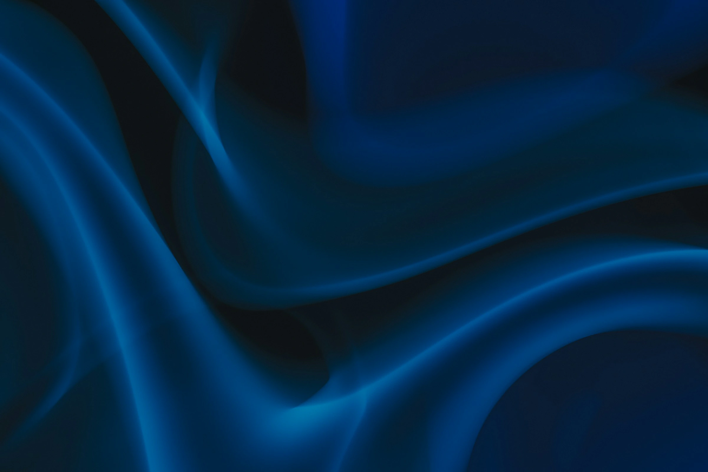

↑ problem-section (five drawn rows) sits above on the homepage
Altruvex

↓ services-section (dark scene, rows that open) follows on the homepage
A · One line
B · Under the surface
C · Lift the surface
AR
Dark